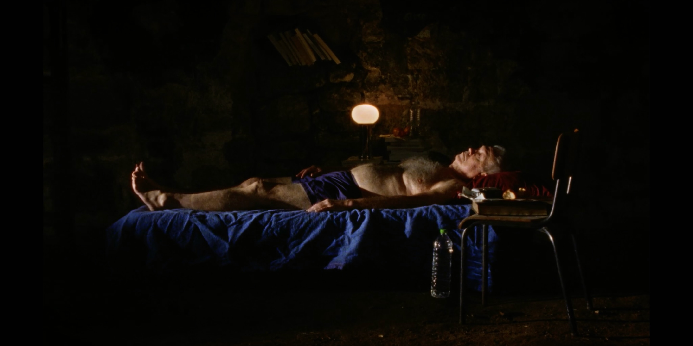
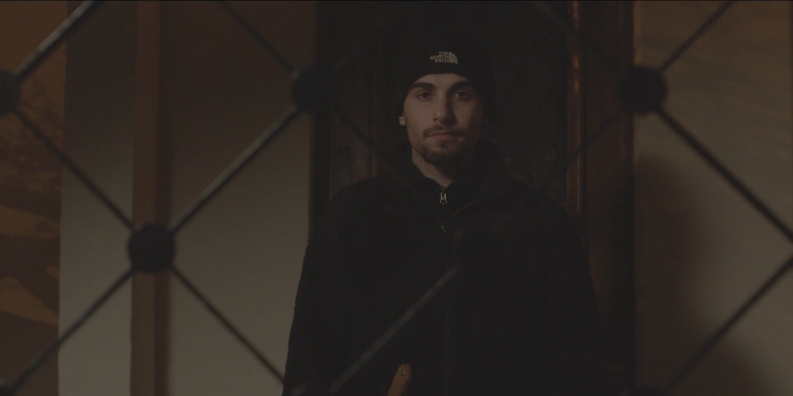
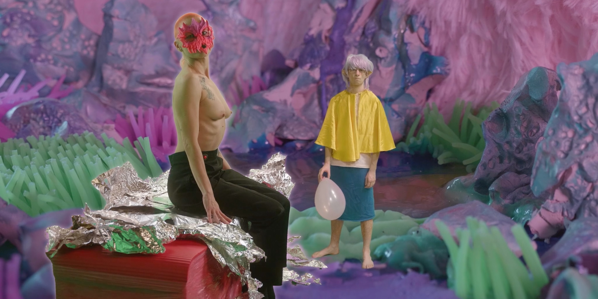
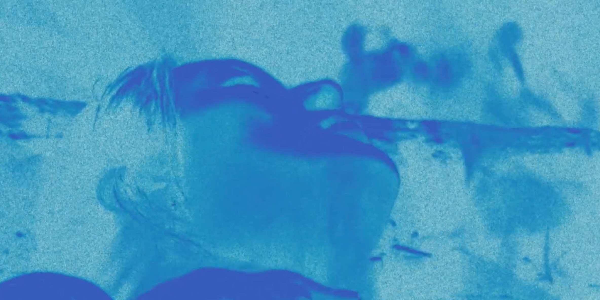
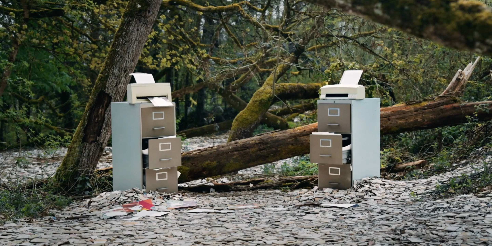
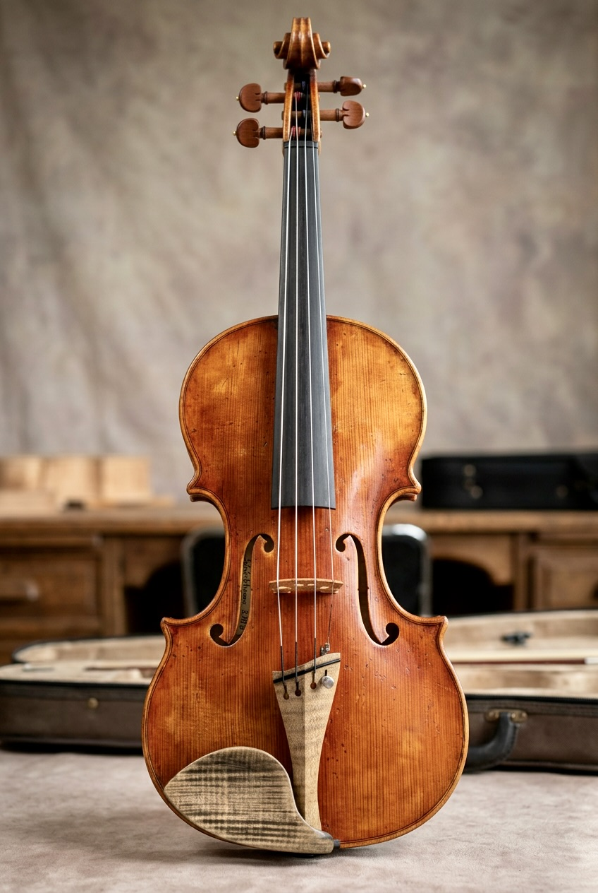
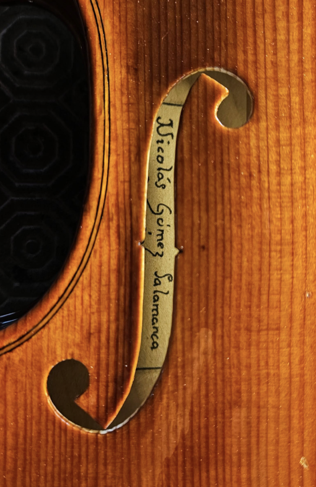
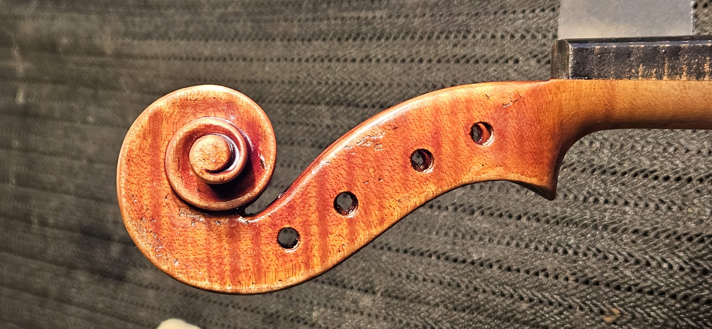
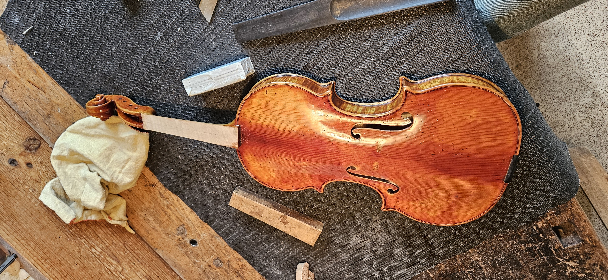

A man who experiences amnesia finds himself in a mysterious Sleep & Memory lab where a young doctor tries to cure him through a magical water.
Sound Editors: Nicolás Gómez Salamanca, Luc Aureille
Director: Nicola Baratto
Production: Le Fresnoy, Studio national des arts contemporains
2024
An ancient baryonic compression wave suddenly cuts through the matter and time of present-day space, causing strange material disturbances in its path.
Sound Editors: Raphaël Zucconi, Robin Touchard
Sound Edition Assistant: Nicolás Gómez Salamanca
Director: Robin Touchard
Production: Le Fresnoy, Studio national des arts contemporains
2024
In the early 19th century, Jacques François Roger built a castle in Senegal and developed the fields of an experimental farm. The madness of a dream of conquest intertwined with agriculture as a strategy of occupation. Despite occupation, the plants, the Waalo and the soil resist.
Sound Editors: Nicolás Gómez Salamanca, Benjamin Poilane
Director: Nicolas Pirus
Production: Le Fresnoy, Studio national des arts contemporains
2024
Sound Editor: Nicolás Gómez Salamanca
Sound Design: André Serre Milan
Sound Design Assistant: Nicolás Gómez Salamanca
Director: Nefeli Papadimouli
Production: Le Fresnoy, Studio national des arts contemporains
2024

Antonio has left the group of friends he grew up with in Seine-Saint-Denis. Using the exquisite cadaver principle, several of his friends successively invent the twists and turns of a tale in which a strange illness plunges him into a coma.
Sound Editors: Nicolás Gómez Salamanca, Benjamin Poilane
Director: Lucas Mesdom
Production: Le Fresnoy, Studio national des arts contemporains
2024

An influencer glorifies the legend of Theremespare. A young queer artist chases it through layers of illusions and fantasies.
Sound Editors: Nicolás Gómez Salamanca, Clément Decaudin
Director: Hantédemos
Production: Le Fresnoy, Studio national des arts contemporains
2024

A newcomer to Paris finds a tender voice on a dating app for their road trip to Nice, with the same Mandarin sound as Ness, wishing to see the monster in error.
Sound Mix: Martin Delzescaux
Sound Assistant: Nicolás Gómez Salamanca
Director: Bohao Liu
Production: Le Fresnoy, Studio national des arts contemporains
2024

In industrial forests, a group of female sound recordists plays back the songs of birds. Seeking to bring the microphone to the living beings that remain, they try to reactivate damaged soundscapes.
Sound Editor: Mélia Roger
Sound Assistant: Nicolás Gómez Salamanca
Director: Mélia Roger
Production: Le Fresnoy, Studio national des arts contemporains
2024
Every day, thousands of people choose to remove their content from social media. YouTube, in particular, is home to ephemeral amateur videos in which people express themselves about their daily lives. Given the loss of control over personal data online, these network-quitters may have found a solution.
Sound Supervisor: Raphaël Zucconi
Sound Assistant: Nicolás Gómez Salamanca
Director: Félix Cote
Production: Le Fresnoy, Studio national des arts contemporains
2024

Two lifelong friends grow up with the shared dream of becoming cosmonauts. They pass countless physical tests, simulate flying through space by bouncing on their beds, and are ultimately selected for the next mission — until tragedy intervenes and something impossible happens between the stars.
Complete resonorization: Nicolás Gómez Salamanca
Director: Konstantin Bronzit
2022
Sound Design: Nicolás Gómez Salamanca, Daniela Gutiérrez
Music Composition: Nicolás Gómez Salamanca, Daniela Gutiérrez
Director: Orly Lovett
2023
A musical project combining the acoustic richness of the violin with a deep dialogue with natural species — aiming to revive and reflect on spaces previously inhabited by the composer. A sonic exploration in the Colombian jungle, a space that becomes a stage for encounters and communication between the birds and the performer.
Through the imitation and transformation of bird songs, the performer generates a dialogue with the other species in the environment, transforming and rearranging them at will. The performer controls all the natural elements that are part of the composition: bird songs, rain, rivers, day, or night.
This composition seeks to celebrate the biodiversity and spirituality of the Colombian jungle while inviting the audience to reflect on the impact of human intervention in these ecosystems.
Created and performed by Nicolás Gómez Salamanca. Written to be controlled using a violin and a MIDI keyboard, played through an octophonic system via computer using MAXMSP.
Music Composition & Violin: Nicolás Gómez Salamanca
Production: Festival Variations Numériques, Université Jean Monnet
2024
Life Out of Balance is the title of an experimental film directed by Godfrey Reggio. This composition, inspired by the film, invites us to reflect on human evolution, excess and consumption.
(You are about to listen to an MP3 stereo version. To listen to the high-quality version, please contact me by email)
Composition: Nicolás Gómez SalamancaThe Eye is a digital instrument primarily controlled by a photosensitive sensor, which represents the eye's retina. When light approaches or moves away from the sensor, it alters the instrument's frequencies and the LFO.
In addition to the photosensitive sensor, it has three other controls: a piezoelectric sensor that changes the sound depending on the pressure applied to it, and two additional controllers that also influence various aspects of the sound.
This instrument is based on a Teensy board, programmed through MaxMSP. It explores unconventional elements for musical creation — light and the force of pressure — as expressive materials.
During my stay in Saint-Étienne, France, I learnt the art of violin making. This practice has allowed me to experiment with sound from its most material and physical dimension, and to deepen my relationship with the violin, which is my main resource and central instrument within my sonic language. To this day I have built one fully finished traditional violin, made entirely by hand from beginning to end. The process was motivated by the idea of bringing a piece of wood to life and by the search to understand sound from its physical origin: form, matter, and vibration.
Starting from my work Itinéraire musical, in which I used extended violin techniques and a piezoelectric microphone to capture pressure and tuning data, I began to reflect on the relationship between my instrument and the technology I needed for my compositions, and on how violin making could help me give an identity to my artistic discourse, and compose and perform more easily. As a continuation of this research, I am currently in the experimentation stage, considering what I could integrate into a violin to adapt it to my needs.




I'm always available for new projects. Feel free to reach out :)